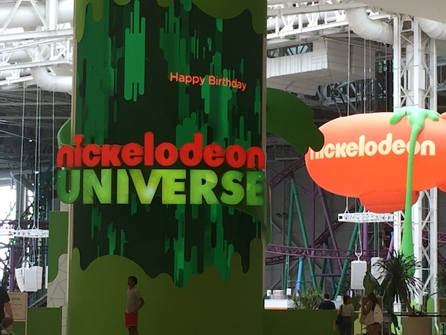
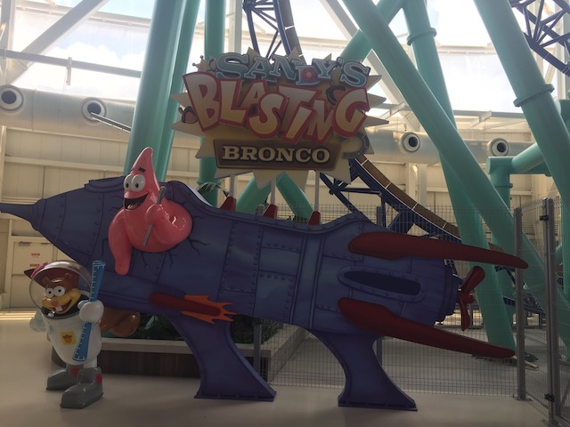
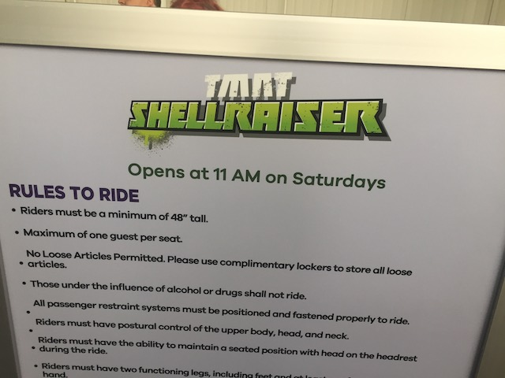
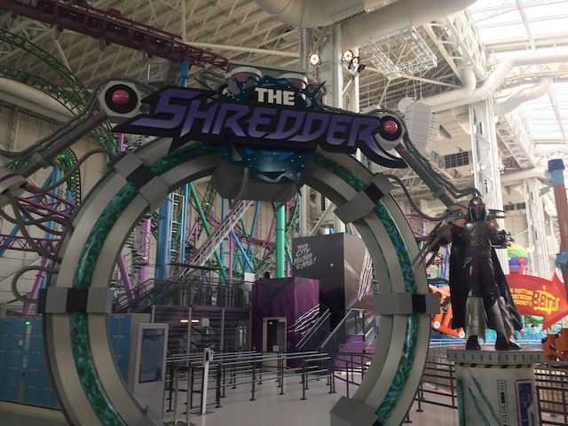
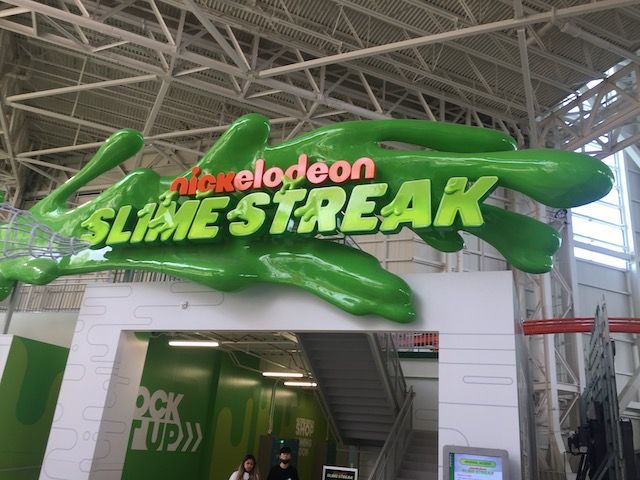
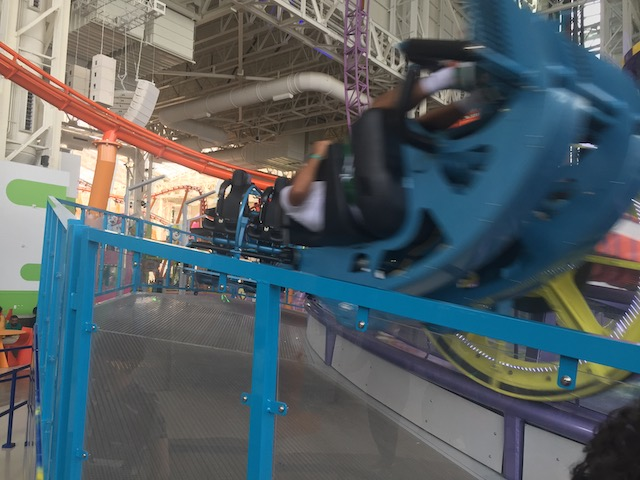
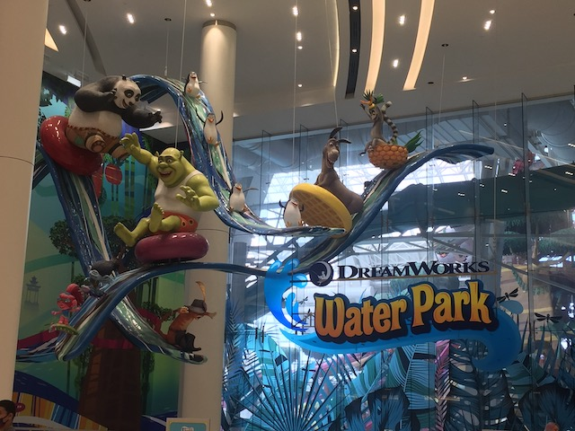
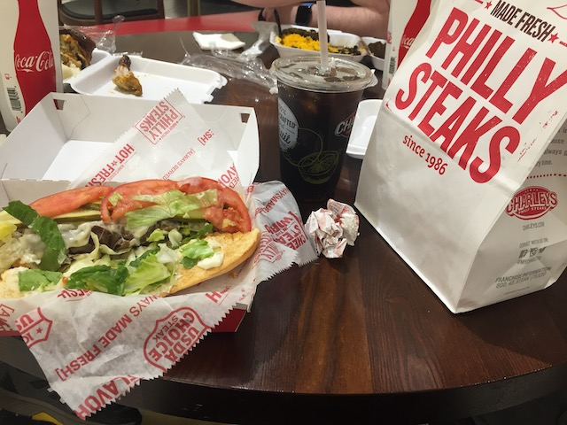
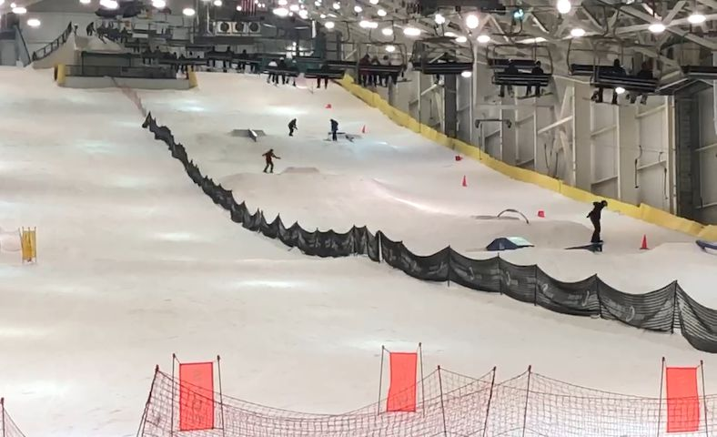

| |
American Dream Review

All right. This is one of the newest theme parks to open up in America, and the only one that seems to be an actual major park. Last time a big park tried to open up in America was Hard Rock Park, and let's just say that that park did NOT have a happy ending. And....part of me is worried that the park will suffer a similar fate. The theme park itself is actually called Nickelodeon Universe, which is in the American Dream Mall. Yes. This giant indoor theme park is ALSO called Nickelodeon Universe, just like ANOTHER certain indoor park. And....there are QUITE a lot of similarities between the two parks. Both are indoor theme parks themed to Nickelodeon Universe, and as such, both have quite a big coaster collection. Both have Eurofighters (though the one here is a lot bigger). Both have Half Pipes (though this one was closed while here). Both have Spinning Coasters (again, this one was bigger). The more you think about it, the more this just seems like a bigger and better version of Nickelodeon Universe. Though this park does have some problems related to the struggles of the American Dream Mall as a whole, such as the park being OUTRAGEOUSLY expensive which....will leave a sour taste in your mouth, as well as far too many rides being closed (And we were lucky that it was only Timmy's HalfPipe for my visit and not one of the major unique rides). But putting those things aside, this version of Nickelodeon Universe is a ton of fun and definately worth checking out if you find yourself at American Dream.
Rollercoasters
There is a link to a review of all the Rollercoasters at Nickelodeon Universe (American Dream).
(Please keep in mind that there's no review of Timmy's Half-Pipe Havoc as it was closed on my last vist).
Top Coasters
Sandy's Blasting Bronco Review

TMNT Shellraiser Review

Decent Coasters
Shredder Review

Family Coasters
Nickelodeon Slime Streak Review

Flat Rides
Here are the reviews of all the Flat Rides at Nickelodeon Universe (American Dream). And I've just gotta admit. The flat ride collection here is REALLY strong. Definately above average as far as your average theme park goes. And considering how new this place is, that makes me really happy. Granted, that's not too surprising since....Minnesota Nickelodeon Universe ALSO has a strong flat ride collection. First ride I want to talk about would be Jimmy Neutron's Atom Smasher. This is another Chance Unicoaster (despite the name, these aren't roller coasters, though I'd LOVE to see a coaster with this technology and concept someday) and I am so happy that these rides are becoming more common (there's also one at the other Nickelodeon Universe) as these rides KICK ASS!!! You have the ability to make this flip as much as you want, which....yeah. REALLY makes for a fun ride. Please build more rides like this because they're some of my favorite flat rides. Next flat ride worth discussing would be Kraang Prime Pandemonium. Now this would be a Zamperla Discovory Revolution, which....is basically a smaller version of the Maxi Dance Party 360. It basically looks like a frisbee. Except these go all the way around, going upsidedown. And you get some good spinning action. Another super fun ride that I'm really glad is here. Next up would be Skyline Scream. This is the parks S&S Drop Tower. And....I'm conflicted on this ride. On the one hand, this ride has a GREAT program, being a combo tower just like Superman: Power Tower at Six Flags Over Texas, and it has a GREAT view of the New York City skyline. Unfortunately, thedrops and launches are somehow EVEN WEAKER than a standard S&S Tower. It damn near feels like a Giant Frog Hopper at times. So that greatly hurts the ride. It's a shame as this EASILY could be one of the best S&S Towers if they only strengthened the ride. And finally, we have Aang's Air Gliders. This is another Zamperla Air Race. They're pretty standard. But god damn it! They're just a TON of fun and I'm happy that Nickelodeon Universe has one of these rides. While those are all the flat rides I rode, there's another one that was closed, but I still want to bring up. Invader Zim's Flip & Spin....OF DOOM!!! These are bumper cars, only with a twist. They have the ability to flip when you hit someone. I LOVE THAT IDEA!!! Unfortunately, these things have a TON of problems and I'm unsure if it'll ever open again. I really hope so because it looks like a REALLY fun flat ride. The park also has some chairswings, a carousel, and a lot of kiddy flat rides.

PLEASE BUILD MORE OF THESE!!!
Dark Rides
Nickelodeon Universe (American Dream) doesn't have any dark rides.
Water Rides
Nickelodeon Universe (American Dream) doesn't have any water rides.
Water Park
So the American Dream Mall also has a water park. Specifically, the Dreamworks Waterpark. I didn't visit it because this place is F*CKING EXPENSIVE!!! GOD DAMN!!! But it does look like a kickass water park with a lot of really cool slides. I genuinely do want to visit this water park as it looks REALLY good. Just hope the prices here (as well as in Nickelodeon Universe) get a bit more reasonable in the future.

Hopefully next time, I'll be able to check it out.
Dining
While technically, Nickelodeon Universe doesn't have any dining options. But the park is inside of a Giant Mall. And yeah. The American Dream Mall has a TON of options for food. Now I didn't do anything special. I just went to the food court. Specifically, I wound up eating at Charleys Philly Steaks, since....they're good. I know we're relatively close to Philadelphia, so getting that is kind of a disgrace. And yeah. This obviously isn't authentic. But....it was all right. Kind of want to go to my local mall and eat at the Charleys Philly Steaks there. Writing about them is making me crave them. But upon looking at their options in more detail, I definately would've gotten something else in hindsight. The mall has a wide arrange of resteraunts, from fast food, to fast casual, to full service resterauts. And....they have a place that sells Donar Kebabs!? Oh well. Something for next time. =)

I want to give this a second chance. See if it's gotten better.
Theming and Other Attractions
Here are the reviews of all the other stuff at Nickelodeon Universe. Well for theming, there's some occasional Nickelodeon theming, but not much. There's not even a ton of "Mall theming" since unlike at its Minnesota cousin, the theme park in this mall isn't placed directly in the center of the mall. It's sort of out in its own little isolated corner. Though there is still some good atmosphere simply due to where this mall is. When riding Skyline Scream and TMNT Shellraiser, you can see the New York City skyline out of the windows. And that is really f*cking cool. And as for other stuff to do, that depends on if we're solely talking about Nickelodeon Universe or the American Dream Mall as a whole. Inside the actual park, they have a rope climbing attraction that looks really cool. However, with the prices this place charges, NOPE!!! But that's the only other real thing to do at Nickelodeon Universe. But that's OK. Because then we get to the rest of the American Dream Mall. I already mentioned the Dreamworks Water Park, and hope to check that out next time since it looks like a really cool water park. But there's a ton more stuff. It has multiple mini golf course, including the Angry Birds Mini Golf, which according to Scott & Steve, was a ton of fun. Really hoping that this was exploding Mini Golf. They have a giant mirror maze here, which....that sounds like a ton of fun. There's a giant ice skating rink, which....that sounds like a lot of fun, though if Ice Skating was a priority, I'd probably just do that at Central Park in NYC (Or Rockefeller Center if I was there at Christmas Time, though that's VERY unlikely given the things I like to do, which aren't exactly open during the winter). There's a Legoland Discovory Center, which....just looks like the halfway point between a Lego Store, and the Miniland section at Legoland. Though there is Legoland New York, which yeah. Is an hour away from NYC itself, but it's still an option if Lego is a huge priority for you. They have an aquarium at the Sea Life aquarium, which is pretty cool. They say to really lean into the NYC stuff due to the mall's really close proximity to New York City. There's Tilt, which is a museum dedicated to 3D street drawings done in chalk. That sounds pretty cool. But finally, let's go over by far, the most unique attraction they have and the one that I did. Big Snow. What's Big Snow? It's an indoor yearround ski resort. Now for those who are big skiiers, this probably isn't that interesting to you since....you go skiing at ski resorts every winter and can do the ultra crazy black dimaond runs that are way more extreme than the slopes here. But that's not me. I had only skiied once prior to visiting American Dream, and I really enjoyed it. And skiing here only made me solidify my enjoyment of skiing. I would love to get more into it, work my way up and do some of the more intermediate runs. Except....skiing is just too expensive for me. I'm simply too poor for this hobby unless I was willing to make some major sacrafices, which....nope. Maybe someday when I'm much wealthier, I'll get into it as I REALLY enjoy the sport a lot. Oh, and they also have a wavepool that has huge waves you can surf. So you can do that as well.

Yeah. This isn't the most extreme skiing, but I had a blast doing this.
In Conclusion
For a park inside of a mall, Nickelodeon Universe really is one of the best. It does a fantastic job of having a wide varitiy of roller coasters, flat rides, and making sure that the rides that they do add are of very high quality. And for those intersted in other stuff, it's located in the American Dream Mall, which genuinely has a ton of cool stuff to do. The water park they have genuinely does look fantastic and something I'd want to check out next time. And there's so much other fun stuff. You can surf here, you can ski here, you can see cool chalk art here, you could ice skate, see cool Lego stuff, and you could even go surfing and skiing in the same day if you want. It sort of acts as a stronger version of the Nickelodeon Universe in Minnesota. I know this place has had a rocky opening and a lot of people are jaded at it. I've heard people complaining of a lot of rides being closed, and the park being really expensive. And....yeah. That is undeniably true. This place is BRUTALLY expensive, which I can't blame people for having a sour taste in their mouth regarding that. But if you ignore that, and they start fixing the amount of rides that are closed (I really hope they improved on that over the past few years). Because this place has a ton of cool stuff and I genuinely want it to do well. If this sounds like stuff that appeals to you, well, it's very close to New York City.
Enthusiast FAQs.
*Are there kiddy coaster restrictions? - Nickelodeon Universe doesn't have a kiddy coaster.

Tips
*Prepare to budget for this place
*Much of the rides are finnicky. Don't be surprised if rides are closed.
*Don't overlook Sandy's Blasting Bronco. That ride kicks ass!
*If you're going to surf or ski, be sure you actually do so.
*Have Fun!
Location
East Rutherford, New Jersey, USA
Theme Park Category:
Amusement Park
Last Day Visited
June 15, 2021
Video
I didn't shoot enough footage to make an American Dream video
Complete Update List
2021
East Coast Trip 2021
Here's a link to the parks website.
Home
|